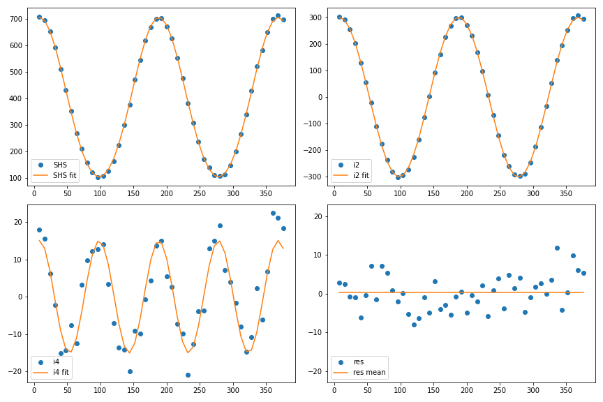

8. SHS analysis¶
Once the spectrum analysis for all the angles has been performed, see ref:polarisation_procedure_page, several observables can be extracted from the angle-dependent intensity data. Many possible analyses can be made depending on what you are looking for. We are detailling the two that are commonly used at your lab, ILM.
{kind=link}
But, if you have developed your own code that extracts other observable from the intensity in function of the polarization angle data, please do not hesitate to contact us so that this code can be added in Alpaga!
8.1. Theoritical stuff¶
8.1.1. a, b ,c formalism¶
One can show that the expression of the Second Harmonic Scattering (SHS) intensity resolved in polarization is (see for instance [5] Chp V or [7] Chp II):
with a, b ,c coefficients depending of hyperpolarizabylity (ref papier), \(\gamma\) the polarization’s state of the incomming light and \(\Gamma\) the polarization’s state of the scattered light ( Vertical or Horizontal ).
From this formula and the a, b ,c parameters, we can calculate three experimental observables, see [9] or [10] :
D : The depolarization ratio
ZetaV / ZetaH
To compute uncertainties for Zeta and D, we first propagate the uncertainties from the Gaussian fit : for that we use « weight » in the Ishs fit procedure (Python function). From this fitting procedure, standard deviations on a, b ,c are obtained as the diagonal of the covariance matrix [11]:
Then we calculate uncertainties on the observables using gaussian error propagation formula, see [7] page 60:
Finally, the uncertainties on D, zetaV and zetaH are calculated in Alpaga as follow:
8.1.2. i0, i2, i4 formalism¶
Polarized-SHS resolved experiments can also be analyzed with Fourier series developments see [12] :
Then coefficients can be estimated as Fourrier series:
where N is the number of measurements.
We can then obtain all the contributions from the signal:
{kind=link}
All graphs are plotted as a function of the incoming polarization angle.
TOP LEFT: raw data of \(I_{SHS}\) for V-outlet Polarisation, and fit \(i_0 + i_2 ~cos(2\gamma) + i_4~cos(4\gamma)\) in continuous curve.
TOP RIGHT : \(I_{SHS}^V - i_0 - i_4 ~cos(4 \gamma)\) in dots, and fit \(i_2 ~cos(2 \gamma)\) in continuous curve.
BOTTOM LEFT : \(I_{SHS}^V - i_0 - i_2 ~cos(2 \gamma)\) in dots, and fit \(i_4 ~cos(4 \gamma)\) in continuous curve.
BOTTOM RIGHT : Residues : \(I_{SHS}^V - i_0 - i_2 ~cos(2\gamma)-i_4 ~cos(4 \gamma))\) in dots, and his mean value in continous curve.
Here is the python code:
fig, axes = plt.subplots(nrows=2, ncols=2, figsize=(12, 8))
axes[0][0].plot(L_x,L_y, 'o' , label='SHS' )
axes[0][0].plot(L_x, (i0 + i2*np.cos(2*np.pi/180*(L_x-alpha_0)) + i4*np.cos(4*np.pi/180*(L_x-alpha_0)) ), '-', label='SHS fit' )
axes[0][0].legend(loc='best')
axes[0][1].plot(L_x, L_y - (i0+i4*np.cos(4*np.pi/180*(L_x-alpha_0))), 'o', label='i2')
axes[0][1].plot(L_x, i2*np.cos(2*np.pi/180*(L_x-alpha_0)), '-', label='i2 fit')
axes[0][1].legend(loc='best')
axes[1][0].plot(L_x,L_y - (i0 + i2*np.cos(2*np.pi/180*(L_x-alpha_0)) ), 'o', label='i4')
axes[1][0].plot(L_x, i4*np.cos(4*np.pi/180*(L_x-alpha_0)), '-', label='i4 fit')
axes[1][0].legend(loc='best')
axes[1][1].plot(L_x,L_y - (i0 + i2*np.cos(2*np.pi/180*(L_x-alpha_0)) + i4*np.cos(4*np.pi/180*(L_x-alpha_0)) ), 'o', label='res' )
axes[1][1].plot(L_x,L_res_mean, label='res mean' )
axes[1][1].legend(loc='lower left')
axes[1][1].set_ylim([-23, 23])
fig.tight_layout()
In order to compute the uncertainties on our observables, we use the residue from the analysis to calculate the standard deviation as:
8.2. Numerical Stuff¶
All of these calculations are numericaly implemented in shs_module.analyse_polarization_SHS in V and H version:
- shs_module.analyse_polarization_SHS_V(L_angle, L_intensity, alpha_0=False, L_intensity_error=False)[source]
From the polarisation angle and the SHS gaussian intensity, return many properties.
- Parameters:
L_angle (list) – The polarisation angle of the fundamental in degree.
L_intensity (list) – The HRS intensity. The size of L_angle and L_intensity shall match.
alpha_0 (bool or float) – [Optional] If set to False, then the alph_0 is a fit parameter. If set to a float, the alpha_0 is not a free parameter, an is fixed to the given value. Note that this angle should be given in degree.
L_intensity_error (bool or float) – [Optional] If set to False, then the uncertanty are not computed. If set to a list, the L_intensity_error is the list of the associated ABSOLUTE error relative to the intensity.
- Returns:
L_SHS_prop (list) – The list of the computed properties. L_SHS_prop = [a, b, c, Zeta, Depol, i0, i2, i4, alpha_0]
L_SHS_prop_error (list) – The list of the error relative to the computed properties. L_SHS_prop_error = [a_verr, b_verr, c_verr, Zeta_serr, i0_serr, i2_serr, i4_serr]
- shs_module.analyse_polarization_SHS_H(L_angle, L_intensity, alpha_0=False, L_intensity_error=False)[source]
From the polarisation angle and the SHS gaussian intensity, return many properties.
- Parameters:
L_angle (list) – The polarisation angle of the fundamental in degree.
L_intensity (list) – The HRS intensity. The size of L_angle and L_intensity shall match.
alpha_0 (bool or float) – [Optional] If set to False, then the alph_0 is a fit parameter. If set to a float, the alpha_0 is not a free parameter, an is fixed to the given value. Note that this angle should be given in degree.
L_intensity_error (bool or float) – [Optional] If set to False, then the uncertanty are not computed. If set to a list, the L_intensity_error is the list of the associated ABSOLUTE error relative to the intensity.
- Returns:
L_SHS_prop (list) – The list of the computed properties. L_SHS_prop = [a, b, c, alpha_0, Zeta, Depol, i0, i2, i4]
L_SHS_prop_error (list) – The list of the error relative to the computed properties. L_SHS_prop_error = [a_verr, b_verr, c_verr, Zeta_serr, i0_serr, i2_serr, i4_serr]
- Release:
1.2
- Date:
Aug 22, 2025